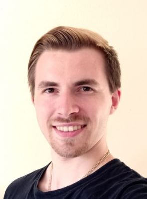

Leon König

born May 13th 2000 in Landstuhl, Germany
Summary
I am interested in anything to do with IT and programming. I also enjoy working with other people.
Education
- 08/2006 - 06/2010 at Münchhofschule, 67691 Hochspeyer
- 08/2010 - 06/2016 at Bertha von Suttner Integrierte Gesamtschule, 67663 Kaiserslautern
- 09/2016 - 07/2020 at Berufliches Staatliches Schulzentrum, 94065 Waldkirchen
Work Experience
- 09/2017 - 02/2018 Internship at Caritas Asylberatung, 94078 Freyung
- 02/2018 - 07/2018 Internship at Maria-Ward Grundschule, 94065 Waldkirchen
- 08/2020 Wesser Promotion for NABU Mainz
- 02/2021 - 06/2022 at Fürst Autoteile GmbH, 94157 Perlesreut
- 06/2022 - 06/2023 at CS Logistik, 94104 Tittling
- 07/2023 - 03/2023 at Modehaus Wöhrl, 94032 Passau
- 03/2023 until now at Leguano GmbH, 94032 Passau
Skills
- German (First language)
- English (Second language, C1 level)
- Photoshop
- Blender 3D Animation
- Office applications
- Davinci Resolve
Hobbies
- Playing piano
- Playing cello
- Drawing
- Programming
Contact